# A tibble: 613,744 × 82
CNT CNTSCHID CNTSTUID REGION OECD LANGTEST_QQQ ST003D02T ST003D03T
* <fct> <dbl> <dbl> <fct> <fct> <fct> <fct> <fct>
1 Albania 800282 800001 Albania No Albanian May 2006
2 Albania 800115 800002 Albania No Albanian February 2006
3 Albania 800242 800003 Albania No Albanian August 2006
4 Albania 800245 800005 Albania No Albanian July 2006
5 Albania 800285 800006 Albania No Albanian January 2006
6 Albania 800172 800007 Albania No Albanian May 2006
7 Albania 800082 800008 Albania No Albanian May 2006
8 Albania 800274 800009 Albania No Albanian December 2006
9 Albania 800057 800010 Albania No Albanian August 2006
10 Albania 800132 800012 Albania No Albanian September 2006
# ℹ 613,734 more rows
# ℹ 74 more variables: ST004D01T <fct>, ST250Q01JA <fct>, ST250Q02JA <fct>,
# ST250Q03JA <fct>, ST250Q05JA <fct>, ST251Q01JA <fct>, ST251Q06JA <fct>,
# ST251Q07JA <fct>, ST253Q01JA <fct>, ST254Q01JA <fct>, ST254Q02JA <fct>,
# ST254Q03JA <fct>, ST254Q04JA <fct>, ST254Q05JA <fct>, ST254Q06JA <fct>,
# ST255Q01JA <fct>, ST256Q02JA <fct>, ST005Q01JA <fct>, ST007Q01JA <fct>,
# ST019AQ01T <fct>, ST019BQ01T <fct>, ST019CQ01T <fct>, ST125Q01NA <fct>, …Loading packages and exploring data
1 Exploring data
Now that we have loaded the PISA_2022 dataset we can start to explore it.
You can check that the tables have loaded correctly by typing the object name and ‘running’ the line (control|command ⌘ and Enter)
We can see from this that the tibble (another word for dataframe, basically a spreadsheet table) is 613744 rows, with 82 columns 1. This is data for all the students from around the world that took part in PISA 2022. The actual PISA dataset has many more columns than this, but for the examples here we have selected 82 of the more interesting data variables. The column names might seem rather confusing and you might want to refer to the PISA 2022 code book to find out what everything means.
The data shown in the console window is only the top few rows and first few columns. To see the whole table click on the Environment panel and the table icon  to explore the table:
to explore the table:
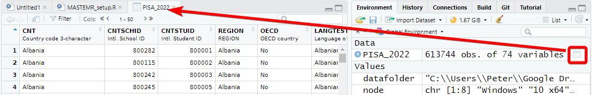
Alternatively, you can also hold down command ⌘|control and click on the table name in your R Script to view the table. You can also type View(<table_name>). Note: this has a capital “V”
In the table view mode you can read the label attached to each column, this will give you more detail about what the column stores. If you hover over columns it will display the label:

Alternatively, to read the full label of a column, the following code can be used:
[1] "Agree/disagree: School has been a waste of time."Each view only shows you 50 columns, to see more use the navigation panel:

Note
To learn more about loading data from in other formats, e.g. SPSS and STATA, look at the tidyverse documentation for haven.
The PISA_2022 dataframe is made up of multiple columns, with each column acting like a vector, which means each column stores values of only one datatype. If we look at the first four columns of the schools table, you can see the CNTSTUID, ESCS and PV1MATH columns are <dbl> (numeric) and the other three columns are of <fctr> (factor), a special datatype in R that helps store categorical and ordinal variables, see Section 9.2 for more information on how factors work.
# A tibble: 5 × 5
CNTSTUID ST004D01T CNT ESCS PV1MATH
<dbl> <fct> <fct> <dbl> <dbl>
1 800001 Female Albania 1.11 180.
2 800002 Male Albania -3.05 308.
3 800003 Male Albania -0.187 268.
4 800005 Female Albania -3.22 273.
5 800006 Female Albania -1.05 435.
Note
Vectors are data structures that bring together one or more data elements of the same datatype. E.g. we might have a numeric vector recording the grades of a class, or a character vector storing the gender of a set of students. To define a vector we use c(item, item, ...), where c stands for combine. Vectors are very important to R, even declaring a single object, x <- 6, is creating a vector of size one. To find out more about vectors see: ?@sec-vectors
We can find out some general information about the table we have loaded. nrow and ncol tell you about the dimensions of the table
[1] 613744[1] 82If we want to know the names of the columns we can use the names() command that returns a vector. This can be a little confusing as it’ll return the names used in the dataframe, which can be hard to interpret, e.g. ST004D01T is PISA’s way of encoding gender. You might find the labels in the view of the table available through View(PISA_2022) (note: the capital V in View) and the Environment panel easier to navigate:
[1] "CNT" "CNTSCHID" "CNTSTUID" "REGION" "OECD"
[6] "LANGTEST_QQQ" "ST003D02T" "ST003D03T" "ST004D01T" "ST250Q01JA"
[11] "ST250Q02JA" "ST250Q03JA" "ST250Q05JA" "ST251Q01JA" "ST251Q06JA"
[16] "ST251Q07JA" "ST253Q01JA" "ST254Q01JA" "ST254Q02JA" "ST254Q03JA"
[21] "ST254Q04JA" "ST254Q05JA" "ST254Q06JA" "ST255Q01JA" "ST256Q02JA"
[26] "ST005Q01JA" "ST007Q01JA" "ST019AQ01T" "ST019BQ01T" "ST019CQ01T"
[31] "ST125Q01NA" "ST261Q01JA" "ST261Q04JA" "ST062Q02TA" "ST038Q08NA"
[36] "ST016Q01NA" "ST337Q07JA" "ST324Q11JA" "ST355Q03JA" "FL150Q02TA"
[ reached getOption("max.print") -- omitted 42 entries ]As mentioned, the columns in the tables are very much like a collection of vectors, to access these columns we can put a $ [dollar sign] after the name of a table. This allows us to see all the columns that table has, using the up and down arrows to select, press the Tab key to complete:
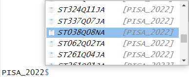
[1] Never or almost never A few times a year <NA>
[4] A few times a month Never or almost never Never or almost never
[7] Never or almost never Never or almost never Never or almost never
[10] <NA> Never or almost never <NA>
[13] Once a week or more Never or almost never Never or almost never
[16] Never or almost never Never or almost never Never or almost never
[19] A few times a month Never or almost never <NA>
[22] Never or almost never Never or almost never Never or almost never
[25] <NA> Never or almost never Never or almost never
[28] Never or almost never Never or almost never Never or almost never
[31] A few times a year Never or almost never Never or almost never
[34] Never or almost never Never or almost never Never or almost never
[37] Never or almost never <NA> Once a week or more
[40] Never or almost never
[ reached getOption("max.print") -- omitted 613704 entries ]
attr(,"label")
[1] In past 12 months, how often: Other students spread nasty rumours about me.
8 Levels: Never or almost never A few times a year ... No ResponseWe can apply functions to the returned column/vector, for example: sum, mean, median, max, min, sd, round, unique, summary, length. To find all the different/unique values contained in a column we can write:
[1] Albania Baku (Azerbaijan) Argentina
[4] Australia Austria Belgium
[7] Brazil Brunei Darussalam Bulgaria
[10] Cambodia Canada Chile
[13] Chinese Taipei Colombia Costa Rica
[16] Croatia Czech Republic Denmark
[19] Dominican Republic El Salvador Estonia
[22] Finland France Georgia
[25] Palestinian Authority Germany Greece
[28] Guatemala Hong Kong (China) Hungary
[31] Iceland Indonesia Ireland
[34] Israel Italy Kosovo
[37] Jamaica Japan Kazakhstan
[40] Jordan
[ reached getOption("max.print") -- omitted 40 entries ]
81 Levels: Albania United Arab Emirates Argentina Australia Austria ... Viet NamWe can also combine commands, with length(<vector>) telling you how many items are in the unique(PISA_2022$CNT) command
You might meet errors when you try and run some of the commands because a field has missing data, recorded as NA. In the case below it doesn’t know what to do with the NA values in ESCS, so it gives up and returns NA:
You can see one of the NAs by just looking at this column:
[1] 1.1112 -3.0507 -0.1867 -3.2198 -1.0548 1.0855 -0.7623 -1.0237 -1.1697
[10] 0.2857 -1.9799 0.0630 -0.1699 -2.5828 -1.1781 -0.5965 -1.0903 0.7457
[19] -0.8850 -1.6258 -0.3345 -2.0967 -1.1041 -1.0403 NA 0.3638 -2.7519
[28] -0.1190 -1.2030 -0.4250 -0.1505 -1.7077 -1.6741 -1.0123 -1.0653 -0.4197
[37] -1.7776 -0.2216 -1.1821 0.3523
[ reached getOption("max.print") -- omitted 613704 entries ]
attr(,"label")
[1] "Index of economic, social and cultural status"To get around this you can tell R to remove the NA values when performing maths calculations:
Tip
R’s inbuilt mode function doesn’t calculate the mathematical mode, instead it tells you what type of data you are dealing with. You can work out the mode of data by using the modeest package:
There is more discussion on how to use modes in R here
Calculations might also be upset when you try to perform maths on a column that you think is a number but is actually stored as another datatype. For example if you wanted to work out the mean number of “How many [digital devices] with screens are there in your [home]?” - ST253Q01JA:
Looking at the structure of this column, we can see it is stored as a factor, not as a numeric. Factors are a special datatype that use numbers to link to categorical values. For ST253Q01JA there are 12 different levels that you can explore using the str() and levels() commands:
Factor w/ 12 levels "There are no <digital devices> with screens.",..: 8 2 8 2 7 8 7 NA 6 7 ...
- attr(*, "label")= chr "How many [digital devices] with screens are there in your [home]?" [1] "There are no <digital devices> with screens."
[2] "One"
[3] "Two"
[4] "Three"
[5] "Four"
[6] "Five"
[7] "6 to 10"
[8] "More than 10"
[9] "Valid Skip"
[10] "Not Applicable"
[11] "Invalid"
[12] "No Response" You can change the type of the column to make it work with the mean command, changing the column to as.numeric(<column>) for the calculation:
[1] 6.312233This is far from ideal as we are now treating a categorical field as a numeric! Looking at the coding for the numbers in the field and the corresponding levels, we see that 1 is actually no digital devices. For more details on datatypes, see ?@sec-datatypes.
[1] "1 : There are no <digital devices> with screens."
[2] "2 : One"
[3] "3 : Two"
[4] "4 : Three"
[5] "5 : Four"
[6] "6 : Five"
[7] "7 : 6 to 10"
[8] "8 : More than 10"
[9] "9 : Valid Skip"
[10] "10 : Not Applicable"
[11] "11 : Invalid"
[12] "12 : No Response"
Tip
To get a good overview of what a table contains, you can use the str(<table_name>) and summary(<table_name>) commands.
1.1 Questions
Using the PISA_2022 dataset:
- use the Environment window to view the dataset, what is the name and the label of the 26th column?
answer
# the 26th column is ST062Q02TA
# the label is: "In the last two full weeks of school, how often: I [skipped] some classes"
# you could use View() instead of the environment window, note the capital V
View(PISA_2022)
# use could use the vector subset to fetch the 100th name
names(PISA_2022)[26]
# [1] "ST062Q02JA"
# you could use the attr function to find the label
attr(PISA_2022$ST062Q02TA, "label")
# "In the last two full weeks of school, how often: I [skipped] some classes"
# or using the dollar sign to load this field will also give the label
PISA_2022$ST062Q02TA- Use the dollar sign
$to return the columnST004D01T. What is stored in this column?
answer
# Student (Standardized) Gender
PISA_2022$ST004D01T
# [1] Female Male Male Female Female Male Male Female Female Female Male
# [12] Male Male Male Female Female Male Female Female Female Male Male
# [23] Male Female Female Female Female Female Male Female Male Male Male
# [34] Female Female Male Female Female Female Female Female Male Female Male
# [ reached getOption("max.print") -- omitted 612744 entries ]
# attr(,"label")
# [1] Student (Standardized) Gender
# Levels: Female Male Valid Skip Not Applicable Invalid No Response- How many students results are in the whole table?
- What
uniquevalues does the dataset hold for Mother’s occupationOCOD1and Father’s occupationOCOD2? Which is larger?
answer
unique(PISA_2022$OCOD1)
unique(PISA_2022$OCOD2)
# you can read the length from the above, or you could use the
# length command to tell you the length of the vector
length(unique(PISA_2022$OCOD1))
# [1] 590
length(unique(PISA_2022$OCOD2))
# [1] 590
# Both fields are the same size implying there are no jobs that women do, but men don't.
# to confirm this we can use the set difference command `setdiff(vector1, vector2)`.
setdiff(unique(PISA_2022$OCOD1),
unique(PISA_2022$OCOD2))
# character(0)- What are the
maximum,mean,medianandminumum science gradesPV1SCIEachieved by any student
- Explore the dataset and makes notes about the range of values of 2 other columns
1.2 “Piping and dplyr”
Piping allows us to break down complex tasks into manageable chunks that can be written and tested one after another. There are several powerful commands in the tidyverse as part of the dplyr package that can help us group, filter, select, mutate and summarise datasets. With this small set of commands we can use piping to convert massive datasets into simple and useful results.
Using the pipe %>% command, we can feed the results from one command into the next command making for reusable and easy to read code.
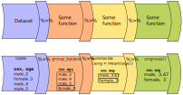
Note
The pipe command we are using %>% is from the magrittr package which is installed alongside the tidyverse. Recently R introduced another pipe |> which offers very similar functionality and tutorials online might use either. The examples below use the %>% pipe.
Let’s look at an example of using the pipe on the PISA_2022 table to calculate the best performing OECD countries for maths PV1MATH by gender ST004D01T:
1PISA_2022 %>%
2 filter(OECD == "Yes") %>%
3 group_by(CNT, ST004D01T) %>%
4 summarise(mean_maths = mean(PV1MATH, na.rm=TRUE),
sd_maths = sd(PV1MATH, na.rm=TRUE),
students = n()) %>%
5 filter(!is.na(ST004D01T)) %>%
6 arrange(desc(mean_maths))- 1
-
line 1 passes the whole
PISA_2022dataset and pipes it into the next line using%>% - 2
-
line 2
filtersout any results that are from non-OECD countries by finding all the rows whereOECDequals==“Yes”, this is then piped to the next line - 3
-
line 3 groups the data by country
CNTand by student genderST004D01T, this is then piped to the next line - 4
-
line 4-6 the
summarisecommand performs a calculation on the country and gender groupings returning three new columns, each command is described by code on a new line and separated by a comma: the mean value for mathsmean_maths, the standard deviationsd_maths, and a column telling us how many students were in each grouping using then()which returns the number of rows in a group. These new columns and the grouping columns are then piped to the next line, all other columns are dropped - 5
-
line 7 filters out any gender
ST004D01Tthat isNA. First is finds all the students that haveNAas their gender by usingis.na(ST004D01T), then it NOTs/flips the result using the exclamation mark!, giving those students who don’t have their gender set toNA. The filtered data is then piped to the next line - 6
-
line 8, finally we
arrange/sort the results indescending order by themean_mathscolumn. The default for arrange is ascending order, leave out thedesc( )for the numbers to be ordered in the opposite way.
# A tibble: 74 × 5
# Groups: CNT [37]
CNT ST004D01T mean_maths sd_maths students
<fct> <fct> <dbl> <dbl> <int>
1 Japan Male 540. 99.0 2856
2 Korea Male 534. 112. 3325
3 Japan Female 531. 88.1 2904
4 Korea Female 528. 99.1 3129
5 Estonia Male 515. 87.4 3272
6 Switzerland Male 511. 99.3 3540
7 Estonia Female 510. 81.5 3120
8 Czech Republic Male 502. 100. 4232
9 Switzerland Female 501. 90.9 3289
10 Austria Male 500. 94.5 3110
# ℹ 64 more rowsAcross the top few countries, Males get a slightly better maths score PV1MATH than Females, other scores are available, please read ?@sec-PV to find out more about the limitations of using a “PV” value.
Note
we met the assignment command earlier <-. Within the tidyverse commands we use the equals sign instead =.
The commands we have just used come from a package within the tidyverse called dplyr, let’s take a look at what they do:
| command | purpose | example |
|---|---|---|
| select | reduce the dataframe to the fields that you specify | select(<field>, <field>, <field>) |
| filter | get rid of rows that don’t meet one or more criteria | filter(<field> <comparison>) |
| group | group fields together to perform calculations | group_by(<field>, <field>)) |
| mutate | add new fields or change values in current fields | mutate(<new_field> = <field> / 2) |
| summarise | create summary data optionally using a grouping command | summarise(<new_field> = max(<field>)) |
| arrange | order the results by one or more fields | arrange(desc(<field>)) |
Note
If you want to explore more of the functions of dplyr, take a look at the helpsheet
Adjust the code above to find out the lowest performing countries for reading PV1READ by gender that are not in the OECD
2 select
The PISA_2022 dataset has far too many fields, to reduce the number of fields to focus on just a few of them we can use select
# A tibble: 613,744 × 4
CNT ESCS ST004D01T ST003D02T
<fct> <dbl> <fct> <fct>
1 Albania 1.11 Female May
2 Albania -3.05 Male February
3 Albania -0.187 Male August
4 Albania -3.22 Female July
5 Albania -1.05 Female January
6 Albania 1.09 Male May
7 Albania -0.762 Male May
8 Albania -1.02 Female December
9 Albania -1.17 Female August
10 Albania 0.286 Female September
# ℹ 613,734 more rowsYou might also be in the situation where you want to select everything but one or two fields, you can do this with the negative signal -, the below code returns all the fields except CNT and OECD:
# A tibble: 613,744 × 80
CNTSCHID CNTSTUID REGION LANGTEST_QQQ ST003D02T ST003D03T ST004D01T
<dbl> <dbl> <fct> <fct> <fct> <fct> <fct>
1 800282 800001 Albania Albanian May 2006 Female
2 800115 800002 Albania Albanian February 2006 Male
3 800242 800003 Albania Albanian August 2006 Male
4 800245 800005 Albania Albanian July 2006 Female
5 800285 800006 Albania Albanian January 2006 Female
6 800172 800007 Albania Albanian May 2006 Male
7 800082 800008 Albania Albanian May 2006 Male
8 800274 800009 Albania Albanian December 2006 Female
9 800057 800010 Albania Albanian August 2006 Female
10 800132 800012 Albania Albanian September 2006 Female
# ℹ 613,734 more rows
# ℹ 73 more variables: ST250Q01JA <fct>, ST250Q02JA <fct>, ST250Q03JA <fct>,
# ST250Q05JA <fct>, ST251Q01JA <fct>, ST251Q06JA <fct>, ST251Q07JA <fct>,
# ST253Q01JA <fct>, ST254Q01JA <fct>, ST254Q02JA <fct>, ST254Q03JA <fct>,
# ST254Q04JA <fct>, ST254Q05JA <fct>, ST254Q06JA <fct>, ST255Q01JA <fct>,
# ST256Q02JA <fct>, ST005Q01JA <fct>, ST007Q01JA <fct>, ST019AQ01T <fct>,
# ST019BQ01T <fct>, ST019CQ01T <fct>, ST125Q01NA <fct>, ST261Q01JA <fct>, …You might find that you have a vector of column names that you want to select, to do this, we can use the any_of command:
# A tibble: 613,744 × 3
CNT CNTSCHID ST004D01T
<fct> <dbl> <fct>
1 Albania 800282 Female
2 Albania 800115 Male
3 Albania 800242 Male
4 Albania 800245 Female
5 Albania 800285 Female
6 Albania 800172 Male
7 Albania 800082 Male
8 Albania 800274 Female
9 Albania 800057 Female
10 Albania 800132 Female
# ℹ 613,734 more rowsWith hundreds of fields available, you might want to focus on fields whose names match a certain pattern, to do this you can use starts_with, ends_with, contains:
# country of birth of student, and father and mother are recorded in ST019___
PISA_2022 %>% select(starts_with("ST019"))# A tibble: 613,744 × 3
ST019AQ01T ST019BQ01T ST019CQ01T
<fct> <fct> <fct>
1 Country of test Country of test Country of test
2 Country of test Country of test Country of test
3 Other country Country of test Country of test
4 Country of test Country of test Country of test
5 Country of test Country of test Country of test
6 Country of test Country of test Country of test
7 Country of test Country of test Country of test
8 Country of test Country of test Country of test
9 Country of test Country of test Country of test
10 Country of test Country of test Country of test
# ℹ 613,734 more rowsWhen you come to building your statistical models you often need to use numeric data, you can find the columns that have only numbers in them by the following. Be warned though, sometimes there are numeric fields which have a few words in them, so R treats them as characters. Use the PISA codebook to help work out where those numbers are.
[1] "CNTSCHID" "CNTSTUID" "ST016Q01NA" "WB151Q01HA" "WB152Q01HA"
[6] "WB156Q01HA" "BELONG" "DISCLIM" "HOMEPOS" "ESCS"
[11] "ATTCONFM" "ICTEFFIC" "STUBMI" "PQMIMP" "PARINVOL"
[16] "PV1MATH" "PV1READ" "PV1SCIE"
Tip
If you do want to change the type of a column to numeric you are going to need to:
filterout any offending rows, andmutatethe column to be numeric:col = as.numeric(col)
2.1 Questions
- Spot the three errors with the following
selectstatement
- Write a
selectstatement to display the monthST003D02Tand year of birthST003D03Tand the genderST004D01Tof each student.
- Write a
selectstatement to show all the fields that are to do with well being and health, e.g.WB150Q01HA“How is your health?”
- [EXTENSION] Adjust your answer to Q3 so that you select the gender
ST004D01Tand the IDCNTSTUIDof each student in addition to theST254____fields looking at digital devices in the home:
3 filter
Not only does the PISA_2022 dataset have a huge number of columns, it has hundred of thousands of rows. We want to filter this down to the students that we are interested in, i.e. filter out data that isn’t useful for our analysis. If we only wanted the results that were Male, we could do the following:
# A tibble: 307,906 × 5
CNT ESCS ST004D01T ST003D02T PV1MATH
<fct> <dbl> <fct> <fct> <dbl>
1 Albania -3.05 Male February 308.
2 Albania -0.187 Male August 268.
3 Albania 1.09 Male May 534.
4 Albania -0.762 Male May 382.
5 Albania -1.98 Male October 425.
6 Albania 0.063 Male April 463.
7 Albania -0.170 Male May 236.
8 Albania -2.58 Male August 327.
9 Albania -1.09 Male March 326.
10 Albania -0.334 Male October 428.
# ℹ 307,896 more rowsWe can combine filter commands to look for Males born in September and where the PV1MATH figure is greater than 750. We can list multiple criteria in the filter by separating the criteria with commas, using commas mean that all of these criteria need to be TRUE for a row to be returned. A comma in a filter is the equivalent of an AND, :
PISA_2022 %>%
select(CNT, ESCS, ST004D01T, ST003D02T, PV1MATH) %>%
filter(ST004D01T == "Male",
ST003D02T == "September",
PV1MATH > 750)# A tibble: 52 × 5
CNT ESCS ST004D01T ST003D02T PV1MATH
<fct> <dbl> <fct> <fct> <dbl>
1 Australia 0.994 Male September 770.
2 Australia 0.837 Male September 758.
3 Australia 1.22 Male September 807.
4 Canada 1.06 Male September 752.
5 Canada 1.04 Male September 788.
6 Canada 1.21 Male September 781.
7 Canada 0.804 Male September 750.
8 Chinese Taipei 0.842 Male September 753.
9 Chinese Taipei 0.488 Male September 794.
10 Chinese Taipei 1.23 Male September 794.
# ℹ 42 more rowsYou can also write it as an ampersand &
Important
Remember to include the == sign when looking to filter on equality; additionally, you can use != (not equals), >=, <=, >, <.
Remember matching is case sensitive, “september” != “September”
Rather than just looking at September born students, we want to find all the students born in the Autumn term. But if we add a couple more criteria on ST003D02T nothing is returned! Why?
PISA_2022 %>%
select(CNT, ESCS, ST004D01T, ST003D02T, PV1MATH) %>%
filter(ST004D01T == "Male",
ST003D02T == "September",
ST003D02T == "October",
ST003D02T == "November",
ST003D02T == "December",
PV1MATH > 750)# A tibble: 0 × 5
# ℹ 5 variables: CNT <fct>, ESCS <dbl>, ST004D01T <fct>, ST003D02T <fct>,
# PV1MATH <dbl>The reason is R is looking for individual students born in September AND October AND November AND December. As a student can only have one birth month there are no students that meet this criteria. We need to use OR :
To create an OR in a filter we use the bar | character, the below looks for all students who are “Male” AND were born in “September” OR “October” OR “November” OR “December”, AND have a PV1MATH > 750.
PISA_2022 %>%
select(CNT, ESCS, ST004D01T, ST003D02T, PV1MATH) %>%
filter(ST004D01T == "Male",
(ST003D02T == "September" | ST003D02T == "October" | ST003D02T == "November" | ST003D02T == "December"),
PV1MATH > 750)# A tibble: 194 × 5
CNT ESCS ST004D01T ST003D02T PV1MATH
<fct> <dbl> <fct> <fct> <dbl>
1 Australia 0.994 Male September 770.
2 Australia 1.03 Male October 808.
3 Australia 1.30 Male October 762.
4 Australia 1.21 Male November 764.
5 Australia 0.837 Male September 758.
6 Australia 1.22 Male September 807.
7 Belgium 0.746 Male December 770.
8 Belgium 0.939 Male December 779.
9 Belgium 1.25 Male November 832.
10 Belgium 1.11 Male October 776.
# ℹ 184 more rowsIt’s neater, maybe, to use the %in% command, which checks to see if the value in a column is present in a vector, this can mimic the OR/| command:
Tip
When building filters you need to know the range of values that a column can take, we can do this in several ways:
[1] "January" "February" "March" "April"
[5] "May" "June" "July" "August"
[9] "September" "October" "November" "December"
[13] "Valid Skip" "Not Applicable" "Invalid" "No Response" # show the actual unique values in a field
# this might be a slightly smaller set of values
unique(PISA_2022$ST003D02T) [1] May February August July January December September
[8] October April March June November <NA>
16 Levels: January February March April May June July August ... No Response[1] "Student (Standardized) Birth - Month"3.1 Questions
- Spot the two errors with the following
selectstatement
- Use
filterto find all the students withPV1READgrade equal to 333.
- Use
filterto find all the students withPV1READ,PV1SCIE, andPV1MATHgrades over 800.
- Spot the three errors with the following
selectstatement
- Use
filterto find all the students withThree or morecars in their homeST251Q01JA. How does this compare to those with noNonecars?
- Adjust your code in Q2. to find the number of students with
Three or morecars in their homeST251Q01JAinItaly, how does this compare withSpain?
answer
PISA_2022 %>%
select(CNT, ST251Q01JA) %>%
filter(ST251Q01JA == "Three or more",
CNT == "Italy")
PISA_2022 %>%
select(CNT, ST251Q01JA) %>%
filter(ST251Q01JA == "Three or more",
CNT == "Spain")
# EXTENSION:
# Note we would need to know the percentage of students
# in each country with that number of cars to make a proper
# comparison. Spain might have more students taking the PISA
# test than Italy, or vice-versa
PISA_2022 %>%
select(CNT, ST251Q01JA) %>%
filter(CNT %in% c("Italy", "Spain")) %>%
group_by(CNT) %>%
mutate(total_stus = n()) %>%
filter(ST251Q01JA == "Three or more") %>%
summarise(three_more = n(),
per_three_more = three_more/unique(total_stus))- Write a
filterto create a table for the number ofFemalestudents with readingPV1READscores lower than 400 in theUnited Kingdom, store the result asread_low_female, repeat but forMalestudents and store asread_low_male. Usenrow()to work out if there are more males or females with a low reading score in the UK
answer
read_low_female <- PISA_2022 %>%
filter(CNT == "United Kingdom",
PV1READ < 400,
ST004D01T == "Female")
read_low_male <- PISA_2022 %>%
filter(CNT == "United Kingdom",
PV1READ < 400,
ST004D01T == "Male")
nrow(read_low_female)
nrow(read_low_male)
# You could also pipe the whole dataframe into nrow()
PISA_2022 %>%
filter(CNT == "United Kingdom",
PV1READ < 400,
ST004D01T == "Female") %>%
nrow()- How many students in the United Kingdom had no television
ST254Q01JAOR no connection to the internetST250Q05JA. HINT: uselevels(PISA_2022$ST254Q01JA)to look at the levels available for each column.
- Which countr[y|ies] had students with
NAfor Gender, remember to check forNAusingis.na()?
4 renaming columns
Very often when dealing with datasets such as PISA or TIMSS, the column names can be very confusing without a reference key, e.g. ST004D01T, OCOD3 and ST261Q04JA. To rename columns in the tidyverse we use the rename(<new_name> = <old_name>) command. For example, if you wanted to rename the rather confusingly named student column for gender, also known as ST004D01T, and the column for having a having enough digital resources in school, also known as IC172Q01JA, you could use:
PISA_2022 %>%
rename(gender = ST004D01T,
dig_resources = IC172Q01JA) %>%
select(CNT, gender, dig_resources) %>%
summary() CNT gender
Spain : 30800 Female :305759
United Arab Emirates: 24600 Male :307906
Canada : 23073 Valid Skip : 0
Kazakhstan : 19769 Not Applicable: 0
Indonesia : 13439 Invalid : 0
Australia : 13437 No Response : 0
(Other) :488626 NA's : 79
dig_resources
Agree :183233
Disagree : 70595
Strongly agree : 49276
Strongly disagree: 35223
Valid Skip : 0
(Other) : 0
NA's :275417 If you want to change the name of the column so that it stays when you need to perform another calculation, remember to assign the renamed dataframe back to the original dataframe. But be warned, you’ll need to reload the full dataset to restore the original names:
5 group_by and summarise
So far we have looked at ways to return rows that meet certain criteria. Using group_by and summarise we can start to analyse data for different groups of students. For example, let’s look at the number of students who don’t have internet connections at home besides a mobile phone ST250Q05JA:
- 1
-
Line 1 passes the full
PISA_2022to the pipe - 2
-
Line 2 makes groups within
PISA_2022using the unique values ofST250Q05JA - 3
-
Line 3, these groups are then passed to
summarise, which creates a new column calledstudent_nand stores the number of rows in eachST250Q05JAgroup using then()command.summariseonly returns the columns it creates, or are in thegroup_by, everything else is discarded.
# A tibble: 3 × 2
ST250Q05JA student_n
<fct> <int>
1 Yes 525842
2 No 56968
3 <NA> 30934What we might want to do is look at this data from a country by country perspective, by adding another field to the group_by() command, we then group by the unique combination of countries CNT and internet access ST250Q05JA, e.g. Albania + Yes; Albania + No; Albania + NA; United Arab Emirates + Yes; etc
int_by_cnt <- PISA_2022 %>%
group_by(CNT, ST250Q05JA) %>%
summarise(student_n = n())
print(int_by_cnt)# A tibble: 238 × 3
# Groups: CNT [80]
CNT ST250Q05JA student_n
<fct> <fct> <int>
1 Albania Yes 4693
2 Albania No 535
3 Albania <NA> 901
4 United Arab Emirates Yes 22206
5 United Arab Emirates No 1116
6 United Arab Emirates <NA> 1278
7 Argentina Yes 10484
8 Argentina No 938
9 Argentina <NA> 689
10 Australia Yes 12808
# ℹ 228 more rowssummarise can also be used to work out statistics by grouping. For example, if you wanted to find out the max, mean and min science grade PV1SCIE by country CNT, you could do the following:
PISA_2022 %>%
group_by(CNT) %>%
summarise(sci_max = max(PV1SCIE, na.rm = TRUE),
sci_mean = mean(PV1SCIE, na.rm = TRUE),
sci_min = min(PV1SCIE, na.rm = TRUE))# A tibble: 80 × 4
CNT sci_max sci_mean sci_min
<fct> <dbl> <dbl> <dbl>
1 Albania 724. 376. 74.6
2 United Arab Emirates 842. 436. 0
3 Argentina 751. 415. 128.
4 Australia 875. 508. 108.
5 Austria 804. 494. 170.
6 Belgium 792. 495. 169.
7 Bulgaria 728. 422. 130.
8 Brazil 784. 406. 106.
9 Brunei Darussalam 762. 445. 135.
10 Canada 893. 499. 107.
# ℹ 70 more rows
Important
group_by() can have unintended consequences in your code if you are saving your pipes to new dataframes. To be safe your can clear any grouping by adding: my_data %>% ungroup()
5.1 Questions
- Spot the three errors with the following
summarisestatement
- Write a
group_byandsummarisestatement to work out themeanandmediancultural capital valueESCSfor each student by countryCNT
- Using
summarisework out,YesorNo, by countryCNTand genderST004D01T, whether students “Agree/disagree: There are enough [digital resources] for every student at my school”IC172Q01JA. Filter out anyNAvalues onIC172Q01JA:
6 mutate
Sometimes you will want to adjust the values stored in a field, e.g. converting a distance in miles into kilometres; or compute a new fields based on other fields, e.g. working out a total grade given the parts of a test. To do this we can use mutate. Unlike summarise, mutate retains all the other columns either adding a new column or changing an existing one
mutate(<field> = <field_calculation>)
The PISA_2022 dataset has results for maths PV1MATH, science PV1SCIE and reading PV1READ. We could combine these to create an overall PISA_grade, and PISA_mean:
PISA_2022 %>%
1 mutate(PV1_total = PV1MATH + PV1SCIE + PV1READ,
2 PV1_mean = PV1_total/3) %>%
3 select(CNT, ST004D01T, ESCS, PV1_total, PV1_mean)- 1
-
mutatecreates a new field calledPV1_totalmade up by adding together the columns for maths, science and reading. Each column acts like a vector and adding them together is the equivalent of adding each students individual grades together, row by row. See ?@sec-vectors for more details on vector addition. - 2
-
inside the same
mutatestatement, we take thePV1_totalcalculated on line two and divide it by 3, to give us a mean value, this is then assigned to a new column,PV1_mean. - 3
-
this line
selects only the fields that we are interested in, dropping the others
# A tibble: 613,744 × 5
CNT ST004D01T ESCS PV1_total PV1_mean
<fct> <fct> <dbl> <dbl> <dbl>
1 Albania Female 1.11 763. 254.
2 Albania Male -3.05 882. 294.
3 Albania Male -0.187 911. 304.
4 Albania Female -3.22 809. 270.
5 Albania Female -1.05 1335. 445.
6 Albania Male 1.09 1464. 488.
7 Albania Male -0.762 1115. 372.
8 Albania Female -1.02 904. 301.
9 Albania Female -1.17 1145. 382.
10 Albania Female 0.286 1235. 412.
# ℹ 613,734 more rowsWe can use mutate to create subsets of data in fields. For example, if we wanted to see how many students in each country were high performing readers, specified by getting a reading grade of greater than 550, we could do the following:
PISA_2022 %>%
2 mutate(PV1READ_high = PV1READ > 550) %>%
3 group_by(CNT, PV1READ_high) %>%
4 summarise(n = n())- 2
-
this line creates a new column called
PV1READ_highfor every students, storing a boolean value,TRUEorFALSEdepending on whether their reading gratesPV1READ> 550. - 3
-
a grouping is made on the country and the new field
PV1READ_high, e.g. Albania + TRUE, Albania + FALSE, etc. - 4
-
using summarise we can find the number of student rows in each grouping using
n(), and drop all the other fields
# A tibble: 159 × 3
# Groups: CNT [80]
CNT PV1READ_high n
<fct> <lgl> <int>
1 Albania FALSE 6055
2 Albania TRUE 74
3 United Arab Emirates FALSE 20711
4 United Arab Emirates TRUE 3889
5 Argentina FALSE 11197
6 Argentina TRUE 914
7 Australia FALSE 9005
8 Australia TRUE 4432
9 Austria FALSE 4461
10 Austria TRUE 1690
# ℹ 149 more rowsComparisons can also be made between different columns, if we wanted to find out the percentage of Males and Females that got a better grade in their maths test PV1MATH than in their reading test PV1READ:
PISA_2022 %>%
2 mutate(maths_better = PV1MATH > PV1READ) %>%
3 select(CNT, ST004D01T, maths_better, PV1MATH, PV1READ) %>%
4 filter(!is.na(ST004D01T), !is.na(maths_better)) %>%
5 group_by(ST004D01T) %>%
6 mutate(students_n = n()) %>%
7 group_by(ST004D01T, maths_better) %>%
8 summarise(n = n(),
9 per = n/unique(students_n))- 2
-
mutatecreates a new field calledmaths_bettermade up by comparing thePV1MATHgrade withPV1READand creating a boolean/logical vector for the column. - 3
-
selects a subset of the columns - 4
-
filters out any students that don’t have gender dataST004D01Tand where the calculation on line 2 failed, i.e.PV1MATHorPV1READwasNA - 5
-
groupon the gender of the student - 6
-
using the
groupon line 5, usemutateto calculate the total number of Males and Females by looking for the number of rows in each groupn(), store this asstudents_n - 7
-
re-
groupthe data on genderST004D01Tand whether the student is better at maths than readingmaths_better - 8
-
count the number of students,
nin each group specified by line 7. - 9
-
create a percentage figure for the number of students in each grouping given by line 7. Use the
nvalue from line 8 and thestudents_nvalue from line 6. NOTE: we need to useunique(students_n)to return just one value for each grouping rather than a value for every row of the line 7 grouping
# A tibble: 4 × 4
# Groups: ST004D01T [2]
ST004D01T maths_better n per
<fct> <lgl> <int> <dbl>
1 Female FALSE 180350 0.590
2 Female TRUE 125409 0.410
3 Male FALSE 118341 0.384
4 Male TRUE 189565 0.616For more information on how to mutate fields using ifelse, see Section 9.1
7 arrange
The results returned by pipes can be huge, so it’s a good idea to store them in objects and explore them in the Environment window where you can sort and search within the output. There might also be times when you want to order/arrange the outputs in a particular way. We can do this quite easily in the tidyverse by using the arrange(<column_name>, <column_name>) function.
# A tibble: 613,744 × 3
CNT ST004D01T PV1MATH
<fct> <fct> <dbl>
1 Cambodia Male 0
2 Guatemala Female 57.8
3 Cambodia Female 84.7
4 Cambodia Male 87.9
5 Cambodia Male 88.6
6 Paraguay Male 90.4
7 Cambodia Male 94.4
8 Cambodia Female 98.0
9 Albania Male 99.7
10 Cambodia Female 100.
# ℹ 613,734 more rowsIf we’re interested in the highest achieving students we can add the desc() function to arrange:
# A tibble: 613,744 × 4
CNT LANGN ST004D01T PV1MATH
<fct> <fct> <fct> <dbl>
1 Singapore Invalid Male 943.
2 Chinese Taipei Mandarin Male 917.
3 Singapore Invalid Male 897.
4 Korea Korean Male 893.
5 Korea Korean Female 889.
6 Chinese Taipei Mandarin Male 887.
7 Singapore Invalid Male 883.
8 Hong Kong (China) Cantonese Male 880.
9 Korea Korean Male 868.
10 Singapore Invalid Male 867.
# ℹ 613,734 more rows8 Bring everyting together
We know that the evidence strongly indicates that repeating a year is not good for student progress, but how do countries around the world differ in terms of the percentage of their students who repeat a year?
1data_repeat <- PISA_2022 %>%
2 filter(!is.na(REPEAT)) %>%
3 group_by(CNT) %>%
4 mutate(total = n()) %>%
5 select(CNT, REPEAT, total) %>%
6 group_by(CNT, REPEAT) %>%
7 summarise(student_n = n(),
8 total = unique(total),
9 per = student_n / unique(total)) %>%
10 filter(REPEAT == "Repeated at lease once") %>%
11 arrange(desc(per))
print(data_repeat)
12write_csv(data_repeat, "<folder_location>/repeat_a_year.csv")- 1
-
uses the
PISA_2022dataframe, note that this line includes<-to store the result opf the piping into a new object calleddata_repeat - 2
-
filterout anyNAvalues in theREPEATfield - 3
-
group on the country of student
CNT - 4
-
create a new column
totalfor total number of rowsn()in each countryCNTgrouping - 5
-
select on the
CNT,REPEATandtotalcolumns - 6
-
regroup the data on country
CNTand whether a student has repeated a yearREPEAT, i.e. Albania+Did not repeat a grade; Albania+Repeated a grade; etc. - 7
-
using the above grouping, count the number of rows in each group
n()and assign this tostudent_n - 8
-
for each grouping keep the
totalnumber of students in each country, as calculated on line 4. Note:unique(total)is needed here to return a single value oftotal, rather than a value for each student in each country - 9
-
using
student_nfrom line 7 and the number of students per countrytotal, from line 4, create a percentageperfor each grouping - 10
-
as we have percentages for both
Repeated at lease onceandNever repeated, we only need to display one of these. - 11
- finally, we sort the data on the per/percentage column, to show the countries with the highest level of repeating a grade. This data is self-recorded by students, so might not be totally reliable!
- 12
- save the data to your own folder as a csv
# A tibble: 78 × 5
# Groups: CNT [78]
CNT REPEAT student_n total per
<fct> <fct> <int> <int> <dbl>
1 Morocco Repeated at lease once 3156 6796 0.464
2 Colombia Repeated at lease once 2783 7401 0.376
3 Cambodia Repeated at lease once 1697 5156 0.329
4 Guatemala Repeated at lease once 1382 5110 0.270
5 Panama Repeated at lease once 1050 4080 0.257
6 Philippines Repeated at lease once 1793 7071 0.254
7 Dominican Republic Repeated at lease once 1603 6566 0.244
8 Belgium Repeated at lease once 1941 8055 0.241
9 Jamaica Repeated at lease once 851 3600 0.236
10 Netherlands Repeated at lease once 1118 4858 0.230
# ℹ 68 more rows9 Advanced topics
9.1 Recoding data (ifelse)
Often we want to plot values in groupings that don’t yet exist, for example might want to give all schools over a certain size a different colour from others schools, or flag up students who have a different home language to the language that is being taught in school. To do this we need to look at how we can recode values. A common way to recode values is through an ifelse statement:
ifelse(<statement(s)>, <value_if_true>, <value_if_false>)
ifelse allows us to recode the data. In the example below, we are going to add a new column to the PISA_2022 dataset (using mutate) noting whether a student got a higher grade in their Maths PV1MATH or Reading PV1READ tests. if PV1MATH is bigger then PV1READ, the maths_better is TRUE, else maths_better is FALSE, or in dplyr format:
maths_data <- PISA_2022 %>%
mutate(maths_better =
ifelse(PV1MATH > PV1READ,
TRUE,
FALSE)) %>%
select(CNT, ST004D01T, maths_better, PV1MATH, PV1READ)
print(maths_data)# A tibble: 613,744 × 5
CNT ST004D01T maths_better PV1MATH PV1READ
<fct> <fct> <lgl> <dbl> <dbl>
1 Albania Female FALSE 180. 248.
2 Albania Male TRUE 308. 258.
3 Albania Male FALSE 268. 285.
4 Albania Female FALSE 273. 322.
5 Albania Female FALSE 435. 464.
6 Albania Male TRUE 534. 451.
7 Albania Male FALSE 382. 391.
8 Albania Female FALSE 273. 308.
9 Albania Female FALSE 355. 429.
10 Albania Female TRUE 430. 420.
# ℹ 613,734 more rowsWe now take this new dataset maths_data and look at whether the difference between relative performance in maths and reading is the same for girls and boys:
maths_data %>%
filter(!is.na(ST004D01T), !is.na(maths_better)) %>%
group_by(ST004D01T, maths_better) %>%
summarise(n = n()) # A tibble: 4 × 3
# Groups: ST004D01T [2]
ST004D01T maths_better n
<fct> <lgl> <int>
1 Female FALSE 180350
2 Female TRUE 125409
3 Male FALSE 118341
4 Male TRUE 189565Adjust the code above to work out the percentages of Males and Females ST004D01T in each group. Check to see if the pattern also exists between science PV1SCIE and reading PV1READ:
adding percentage column
PISA_2022 %>%
mutate(maths_better =
ifelse(PV1MATH > PV1READ,
TRUE,
FALSE)) %>%
select(CNT, ST004D01T, maths_better, PV1MATH, PV1READ) %>%
filter(!is.na(ST004D01T), !is.na(maths_better)) %>%
group_by(ST004D01T) %>%
mutate(students_n = n()) %>%
group_by(ST004D01T, maths_better) %>%
summarise(n = n(),
per = n/unique(students_n))comparing science and reading
PISA_2022 %>%
mutate(sci_better =
ifelse(PV1SCIE > PV1READ,
TRUE,
FALSE)) %>%
select(CNT, ST004D01T, sci_better, PV1SCIE, PV1READ) %>%
filter(!is.na(ST004D01T), !is.na(sci_better)) %>%
group_by(ST004D01T) %>%
mutate(students_n = n()) %>%
group_by(ST004D01T, sci_better) %>%
summarise(n = n(),
per = n/unique(students_n))comparing science and maths
PISA_2022 %>%
mutate(sci_better =
ifelse(PV1SCIE > PV1MATH,
TRUE,
FALSE)) %>%
select(CNT, ST004D01T, sci_better, PV1SCIE, PV1MATH) %>%
filter(!is.na(ST004D01T), !is.na(sci_better)) %>%
group_by(ST004D01T) %>%
mutate(students_n = n()) %>%
group_by(ST004D01T, sci_better) %>%
summarise(n = n(),
per = n/unique(students_n))ifelse statements can get a little complicated when using factors (see: Section 9.2). Take this example. Let’s flag students who have a different home language LANGN to the language that is being used in the PISA assessment tool LANGTEST_QQQ. We make an assumption here that the assessment tool will be the language used at school, so these students will be learning in a different language to their mother tongue. if LANGN equals LANGTEST_QQQ, the lang_diff is FALSE, else lang_diff is TRUE, this raises an error:
lang_data <- PISA_2022 %>%
mutate(lang_diff =
ifelse(LANGN == LANGTEST_QQQ,
FALSE,
TRUE)) %>%
select(CNT, lang_diff, LANGTEST_QQQ, LANGN)Error in `mutate()`:
ℹ In argument: `lang_diff = ifelse(LANGN == LANGTEST_QQQ, FALSE, TRUE)`.
Caused by error in `Ops.factor()`:
! level sets of factors are differentThe levels in each field are different, i.e. the range of home languages is larger than the range of test languages. To fix this, all we need to do is change the datatype of the factors LANGN and LANGTEST_QQQ to characters using as.character(<field>). This will then allow the comparison of the text stored in each row:
lang_data <- PISA_2022 %>%
mutate(lang_diff =
ifelse(as.character(LANGN) == as.character(LANGTEST_QQQ),
FALSE,
TRUE)) %>%
select(CNT, lang_diff, LANGTEST_QQQ, LANGN)
print(lang_data)# A tibble: 613,744 × 4
CNT lang_diff LANGTEST_QQQ LANGN
<fct> <lgl> <fct> <fct>
1 Albania FALSE Albanian Albanian
2 Albania FALSE Albanian Albanian
3 Albania FALSE Albanian Albanian
4 Albania FALSE Albanian Albanian
5 Albania FALSE Albanian Albanian
6 Albania FALSE Albanian Albanian
7 Albania FALSE Albanian Albanian
8 Albania FALSE Albanian Albanian
9 Albania FALSE Albanian Albanian
10 Albania FALSE Albanian Albanian
# ℹ 613,734 more rowsWe can now look at this dataset to get an idea of which countries have the largest percentage of students learning in a language other than their mother tongue:
lang_data_diff <- lang_data %>%
group_by(CNT) %>%
mutate(student_n = n()) %>%
group_by(CNT, lang_diff) %>%
summarise(n = n(),
percentage = 100*(n / max(student_n))) %>%
filter(!is.na(lang_diff),
lang_diff == TRUE)
print(lang_data_diff)# A tibble: 80 × 4
# Groups: CNT [80]
CNT lang_diff n percentage
<fct> <lgl> <int> <dbl>
1 Albania TRUE 720 11.7
2 United Arab Emirates TRUE 13933 56.6
3 Argentina TRUE 788 6.51
4 Australia TRUE 1827 13.6
5 Austria TRUE 1455 23.7
6 Belgium TRUE 2445 29.5
7 Bulgaria TRUE 961 15.7
8 Brazil TRUE 559 5.18
9 Brunei Darussalam TRUE 4831 86.6
10 Canada TRUE 5971 25.9
# ℹ 70 more rowsThis looks like a promising dataset, but there are some strange results:
# A tibble: 8 × 4
# Groups: CNT [8]
CNT lang_diff n percentage
<fct> <lgl> <int> <dbl>
1 Hong Kong (China) TRUE 5626 95.2
2 Macao (China) TRUE 4384 100
3 Montenegro TRUE 5596 96.6
4 Norway TRUE 6611 100
5 Philippines TRUE 6693 93.0
6 Ukrainian regions (18 of 27) TRUE 3747 96.7
7 Singapore TRUE 6567 99.4
8 Chinese Taipei TRUE 5821 99.4Exploring data for Ukraine, we can see that a different spelling has been used in each field, Ukrainian and Ukranain, an incorrect spelling.
# A tibble: 3,876 × 4
CNT lang_diff LANGTEST_QQQ LANGN
<fct> <lgl> <fct> <fct>
1 Ukrainian regions (18 of 27) TRUE Ukranian Ukrainian
2 Ukrainian regions (18 of 27) TRUE Ukranian Ukrainian
3 Ukrainian regions (18 of 27) TRUE Ukranian Russian
4 Ukrainian regions (18 of 27) TRUE Ukranian Ukrainian
5 Ukrainian regions (18 of 27) TRUE Ukranian Ukrainian
6 Ukrainian regions (18 of 27) TRUE Ukranian Ukrainian
7 Ukrainian regions (18 of 27) TRUE Ukranian Russian
8 Ukrainian regions (18 of 27) TRUE Ukranian Ukrainian
9 Ukrainian regions (18 of 27) TRUE Ukranian Ukrainian
10 Ukrainian regions (18 of 27) TRUE Ukranian Ukrainian
# ℹ 3,866 more rowsifelse can help here too. If we pick the spelling we want to stick to, we can recode fields to match:
lang_data %>%
mutate(LANGTEST_QQQ =
ifelse(as.character(LANGTEST_QQQ) == "Ukranian",
"Ukrainian",
as.character(LANGTEST_QQQ))) %>%
mutate(lang_diff =
ifelse(as.character(LANGN) == as.character(LANGTEST_QQQ),
FALSE,
TRUE)) %>%
filter(CNT == "Ukrainian regions (18 of 27)")# A tibble: 3,876 × 4
CNT lang_diff LANGTEST_QQQ LANGN
<fct> <lgl> <chr> <fct>
1 Ukrainian regions (18 of 27) FALSE Ukrainian Ukrainian
2 Ukrainian regions (18 of 27) FALSE Ukrainian Ukrainian
3 Ukrainian regions (18 of 27) TRUE Ukrainian Russian
4 Ukrainian regions (18 of 27) FALSE Ukrainian Ukrainian
5 Ukrainian regions (18 of 27) FALSE Ukrainian Ukrainian
6 Ukrainian regions (18 of 27) FALSE Ukrainian Ukrainian
7 Ukrainian regions (18 of 27) TRUE Ukrainian Russian
8 Ukrainian regions (18 of 27) FALSE Ukrainian Ukrainian
9 Ukrainian regions (18 of 27) FALSE Ukrainian Ukrainian
10 Ukrainian regions (18 of 27) FALSE Ukrainian Ukrainian
# ℹ 3,866 more rowsUnfortunately, if you explore this dataset a little further, the language fields don’t conform well with each other and a lot more work with ifelse will be needed before you could put together any full analysis around students who speak different languages at home and at school.
Tip
It’s possible to nest our ifelse statements, by writing another ifelse where you would have the <value_if_false>, for example we might want to give describe the type of school in England:
9.2 Factors and statistical data types
The types of variable will heavily influence what statistical analysis you can perform, e.g. you’ll need numeric values for a t-test. R is there to help by assigning datatypes to each field. We have different sorts of data that can be stored:
- Categorical - data that can be divided into groups or categories
- Nominal - categorical data where the order isn’t important, e.g. gender, or colours
- Ordinal - categorical data that may have order or ranking, e.g. exam grades (A, B, C, D) or lickert scales (strongly agree, agree, disgaree, strongly disagree)
- Numeric - data that consists of numbers
- Continuous - numeric data that can take any value within a given range, e.g. height (178cm, 134.54cm)
- Discrete - numeric data that can take only certain values within a range, e.g. number of children in a family (0,1,2,3,4,5)
But here we are going to look at how R handles factors. Factors have two parts, levels and codes. levels are what you see when you view a table column, codes are an underlying order to the data. Factors allow you to store data that has a known set of values that you might want to display in an order other than alphabetical. For example, if we look at the month field ST003D02T using the levels(<field>) command:
[1] "January" "February" "March" "April"
[5] "May" "June" "July" "August"
[9] "September" "October" "November" "December"
[13] "Valid Skip" "Not Applicable" "Invalid" "No Response" We can see that the months of the year are there along with other possible levels. With this particular column there are levels for missing or wrong responses (“Valid Skip”, “Not Applicable” “Invalid”, “No Response”), though PISA rarely uses them. You are more likely to find that missing/wrong data items are coded as NA, as you can see below:
# A tibble: 13 × 2
ST003D02T n
<fct> <int>
1 January 48760
2 February 43030
3 March 48671
4 April 47014
5 May 49235
6 June 48890
7 July 51262
8 August 51681
9 September 51755
10 October 51703
11 November 48179
12 December 48156
13 <NA> 25408Codes are the underlying numbers/order for each level, in this case 1 = January, 2 = February, etc. R stores factors as codes, then uses the levels to display the data. You can see the codes by using the as.numeric command on a factor:
[1] 5 2 8 7 1 5 5 12 8 9 10 4 5 8 7 2 3 6 3 8 10 1 10 2 5
[26] 6 8 1 3 2 5 7 12 4 1 10 10 3 3 9
[ reached getOption("max.print") -- omitted 613704 entries ]How can this be useful? Firstly it’s more efficient for R to store data this way, numbers (codes) are smaller and easier to sort/search than text (levels). But it also helps when we come to presenting data. A good example is how plots are made, they will use the codes to give an order to the display of columns, in the plot below, February (2) comes before August (8), even though there were more students born in August and A is before F in the alphabet:
grph_data <- PISA_2022 %>%
group_by(ST003D02T) %>%
summarise(n=n())
grph_data %>% arrange(desc(n)) %>% pull(ST003D02T) [1] September October August July May June January
[8] March November December April February <NA>
attr(,"label")
[1] Student (Standardized) Birth - Month
16 Levels: January February March April May June July August ... No Responseggplot(data=grph_data, aes(x=ST003D02T, y=n)) +
geom_bar(stat = "identity") +
theme(axis.text.x = element_text(angle = 45, hjust = 1))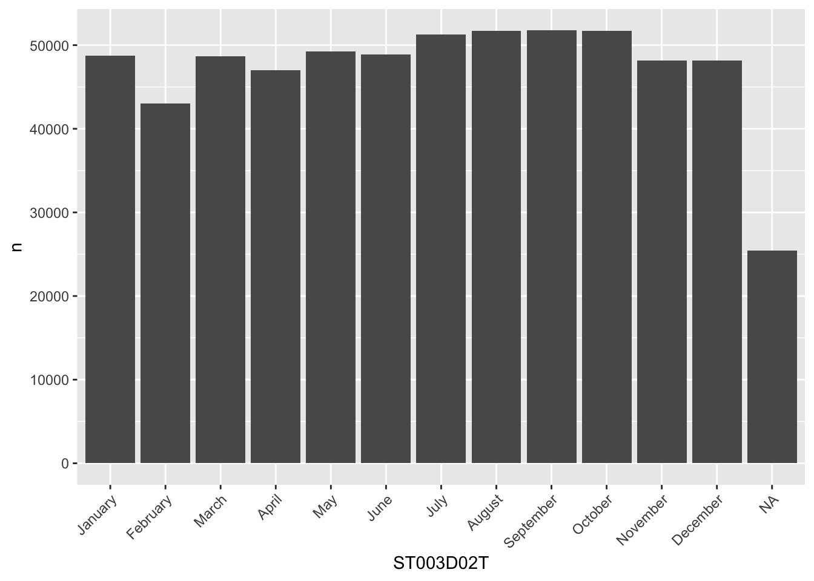
To re-order the columns to match the number of students in each month, we can either try to do this manually, which is rather cumbersome:
my_levels <- c("September", "October", "August", "July", "May", "June",
"January", "March", "November", "December", "April", "February",
"Valid Skip", "Not Applicable", "Invalid", "No Response")
grph_data$ST003D02T <- factor(grph_data$ST003D02T, levels=my_levels)
ggplot(data=grph_data, aes(x=ST003D02T, y=n)) +
geom_bar(stat = "identity")+
theme(axis.text.x = element_text(angle = 45, hjust = 1))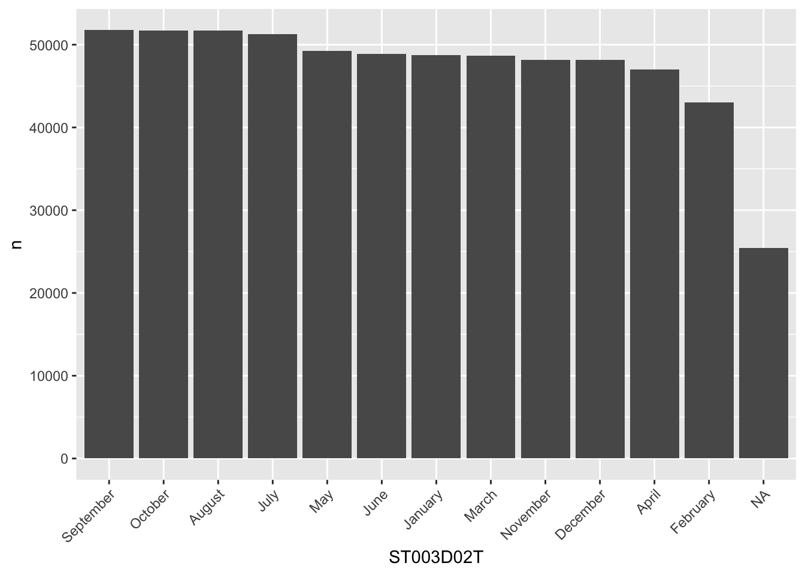
Or we can get R to do this for us:
# get the levels in order and pull/create a vector of them
my_levels <- grph_data %>% arrange(desc(n)) %>% pull(ST003D02T)
# reassign the re-ordered levels to the dataframe column
grph_data$ST003D02T <- factor(grph_data$ST003D02T, levels=my_levels)
ggplot(data=grph_data, aes(x=ST003D02T, y=n)) +
geom_bar(stat = "identity")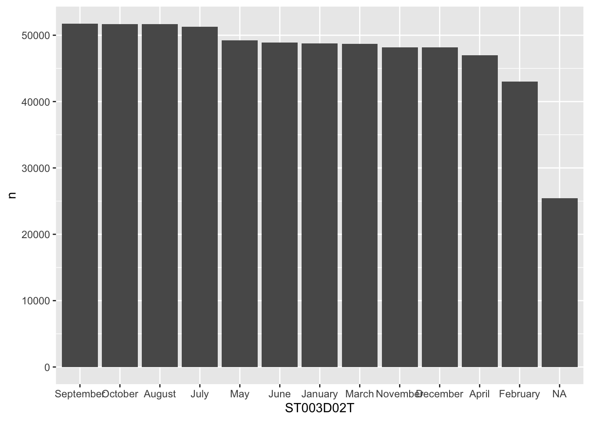
To learn a lot more about factors, see Hadley’s chapter
10 Seminar tasks
10.1 Student dataset
- How many unique values are there in the
OCOD3field for student intended future occupation? How does the most desired career vary by gender?
- write code to work out the
meanandmedianPV1MATHscore for each countryCNT.
- what is the fourth most popular language at home
LANGNspoken by students in schools in theIreland, how does this compare toGermany?
- Spot the five errors with the following code. Can you make it work? What does it do?
# Work out when science scores are better than maths
PISA_2022_scimath < PISA_2022 %>%
rename(gender = ST004D01T) %>%
mutate(sci better = PV1SCIE - PV1MATH) %>%
filter(is.na(scibetter) %>%
group_by(CNT gender) %>%
summarise(students = n,
sci_win = sum(scibetter >= 0),
per_scibetter = 100*(sci_win/students))answer
# Work out when more time spent in language lessons than maths lessons
PISA_2022_scimath <- PISA_2022 %>% #1 make sure you have the assignment arrow <-
rename(gender = ST004D01T) %>%
mutate(sci_better = PV1MATH - PV1SCIE) %>% #2 _ not space in name of field
filter(!is.na(sci_better)) %>% #3 this needs to be !is.na, otherwise it'll return nothing
group_by(CNT, gender) %>% #4 missing comma
summarise(students = n(), #5 missing brackets on the n() command
sci_win = sum(sci_better >= 0),
per_sci_win = 100*(sci_win/students))- By country and gender work out the mean, median and standard deviations of
STUBMI, order by the descendingmean.
10.2 Teacher dataset
To further check your understanding of this section you will be attempting to analyse the 2022 teacher dataset. This dataset includes records for 68054 teachers from 18 countries, including 544 columns, covering attitudinal, demographic and workplace data. You can find the dataset here in the .parquet format.
- Work out how many teachers are in the dataset for
Portugal
- For each country
CNTRYIDby genderTC001Q01NA, what is themeantime that a teacher has been in the teaching professionTC007Q02NA? Include the number of teachers in each group. Order this to show the country with the longest serving workforce:
- For each country
CNTfind out which teachers report that they ‘Help students think critically’TC199Q07HA. Hin: you’ll need to look at the levels of this question to find the correct filter:
answer
crit_thinking <- PISA_2022_teacher %>%
rename(crit_think = TC199Q07HA) %>%
group_by(CNT) %>%
mutate(teachers=n()) %>%
group_by(CNT, crit_think) %>%
summarise(n = n(),
per = n()/unique(teachers)) %>%
arrange(desc(per)) %>%
filter(crit_think == "A lot")
# interestingly the highest performing countries also
# have some of the lowest scores in helping children
# think critically. To plot this:
left_join(crit_thinking,
PISA_2022 %>% group_by(CNT) %>% summarise(maths = mean(PV1MATH))) %>%
ggplot(aes(x=per, y=maths)) +
geom_point() +
geom_smooth()- Explore the data on use of technology in the classroom
TC169____
Save the results of one of the above questions using
write_csv().[EXTENSION] explore the dataset and find out some more interesting facts to share with your group
10.3 Graphing
The tidyverse includes the incredibly powerful ggplot2 package. This package is pretty much the industry standard for making graphs for publication. ggplot2 is built on the grammar of graphics where you build graphs by specifying underlying attributes and layering geometric objects on top of each other. In the diagram below you can see how a graph is built from geometric objects (the things that are plotted such as points and bars) a scale, and plot annotations (e.g. a key, title etc). You can then apply faceting to the graph to automatically split one graph into multiple plots, allowing you to easily compare different groupings. Publications, such as the Financial Times, make daily use of ggplot2.
11 ggplot
The basic structure of ggplot code is to combine different graphing elements through the use of the + operator. To demonstrate this, let’s look at the relationship between a poverty indicator ESCS and the performance in Maths PV1MATH, by gender ST004D01T and country CNT:
library(tidyverse)
# wrangle our data
1graph_data <- PISA_2022 %>%
filter(CNT %in% c("France", "United Kingdom"))
# display a graph of the results
2ggplot(data = graph_data,
aes(x = ESCS, y = PV1MATH, colour = CNT)) +
3 geom_point(size=0.1) +
4 geom_smooth(method = 'lm') +
5 facet_wrap(. ~ ST004D01T) +
6 ggtitle("Comparison of poverty indicator and Maths result, by gender and country") +
theme(legend.position = "bottom")- 1
-
Hopefully you can work out what lines 1-3 do from the previous chapter, let’s focus on the
ggplotcommands - 2
-
line 7-8 set up the
ggplotgiving it the table objectgraph_dataas its data input and setting up the aesthetics for the rest of the graph elements using columns fromgraph_data. Theaes(<attribute>, <attribute>, ...)command allows us to specify aesthetic elements of the graph that will change dependent on the dataset we use. In the PISA_2022 data set, the variableESCSrefers to an index of economic status, andPV1Math, is the plausible value of the mathematics score. We set the x and y variablesx=ESCSandy=PV1MATH, definingaes()insideggplot()means we will pass down these values to subsequent geometric objects so we don’t have to define thesexandyaxis items again and again. - 3
-
line 9 using the data and
aesvalues defined on lines 7-8,geom_pointuses thesexandyvalues to draw a point for each student in our dataset. There are lots of different parameters we could givegeom_pointe.g. specifying size and shape, but here we are content with just setting thesizeto be 0.1 and using the defaults. - 4
-
line 10 we add another geometric object on top of the points, this time we add a line of best fit
geom_smooth, again this geometric object uses the values specified on lines 7-8, and we define themethodaslm, to calculate a linear model line of best fit. - 5
-
line 11 uses
facet_wrap(. ~ CNT)to create a graph for each group ofCNTin the dataset, i.e. a graph for each country defined on line 3. - 6
-
lines 12 and 13, finally we customise the title of the graph,
ggtitle, ready for display and place the legend underneath the graph
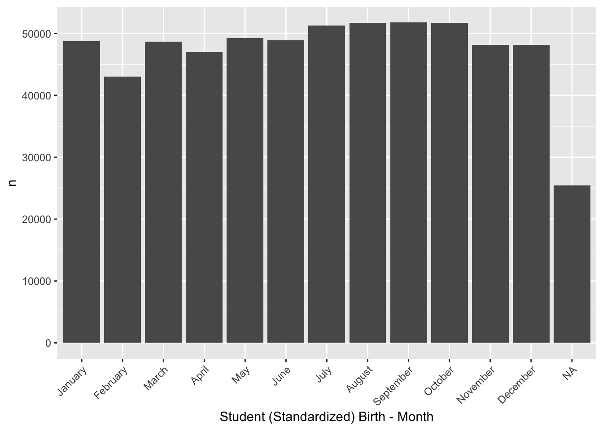
Important
Switching between the pipes and ggplot can get rather confusing. A very common mistake in using ggplot is to try and link together the geom_ elements with a pipe command %>% rather than the +.
12 geoms
There are about 40 different geometric objects in ggplot, allowing you to create almost any sort of graph. We will be exploring a few of them in detail, but if you want to explore others, please follow some of the links below:
- geom_bar for creating bar charts and histograms
- geom_point for plotting single points
- geom_line for connecting points together and showing trends
- geom_text for adding text labels to data points
- geom_boxplot for representing the range of data
- geom_violin an even better way for representing the range of data
- geom_hex for creating heat maps
- geom_map for adding geographic maps
- geom_smooth for adding lines of best fit
- geom_hline for adding static horizontal lines to a graph
- geom_vline for adding static vertical lines to a graph
12.1 geom_point
Rather unsurprisingly, geom_point allows us to plot a layer of points using x and y coordinates. The below example shows how we can specify within the ggplot function data=country_plot_data. We then define the aesthetic attributes of the graph, passing the x x=NumberOfBoys and y y=NumberOfGirls values. Once these have been declared in the ggplot(...) function, their values are passed down to any subsequent geom_, in this case geom_point will use the data and x and y values that have been specified in ggplot(...)
# create a new dataframe of maths and reading scores by country and OECD status
1country_plot_data <- PISA_2022 %>%
2 group_by(OECD, CNT) %>%
3 summarise(mean_maths = mean(PV1MATH),
mean_read = mean(PV1READ),
sz = n())
# using this new dataframe, show the relationship between maths and reading score
# using geom_points
4ggplot(data=country_plot_data,
5 aes(x=mean_maths, y=mean_read)) +
6 geom_point(aes(size=sz, colour=OECD), alpha = 0.6)- 1
-
pipe the large data.frame
PISA_2022to apply a number of functions. - 2
-
groups by
OECD(aYesorNoindicating membership) andCNT(the name of the country). - 3
-
calculate the
meanmathematics and reading score, and create new variables (mean_maths, andmean_read) for their values. In addition, in line 6, the variablesszis created which counts the number of responses per country through then()command. This whole pipe is then saved to thecountry_plot_dataobject, using the<-on line 2 - 4
-
In
ggplotwe specifiy the data that should be plotted - the new dataframecountry_plot_data - 5
-
We pass the
xandyvariables,mean_maths, andmean_read, inside theaesthetic function. These values will be passed to any subsequentgeom_ - 6
-
We make a number of tweaks to the points: first setting the
aesthetics - thesizeof the points is linked to theszvariable we created, the number of responses per country, and thecolouris linked toOECDmembership. Finally (and note this is outside theaesbrackets, we set analphavalue which makes the point slightly transparent, which is more visually appealing where points overlap.
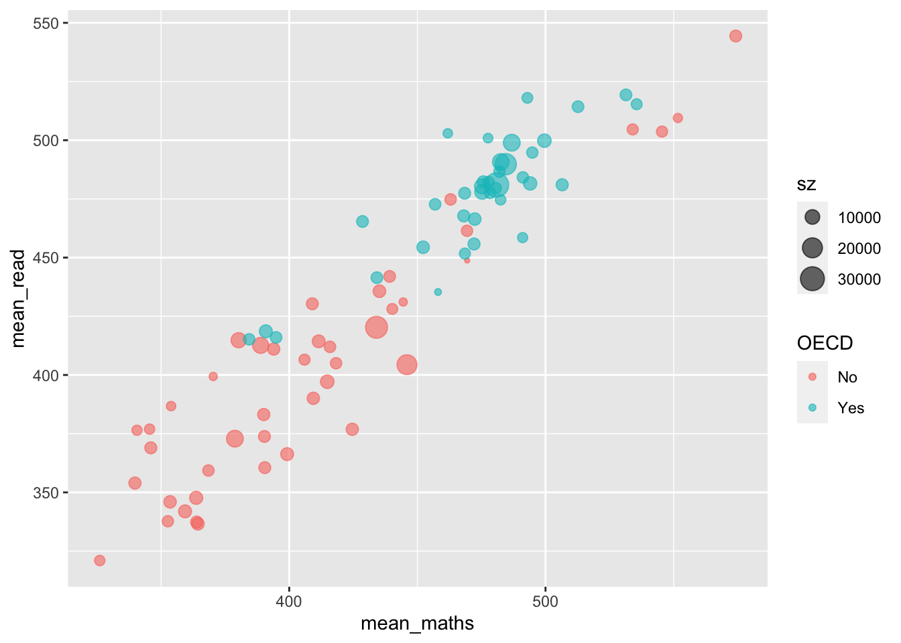
Important
Defining things inside aes mean that they will change with the dataset you use, if you define them outside aes then they will be constant values. For example
# plotting number of boys as x, number of girls as y and % disadvantaged as size,
# all inside aes, so each point is a table row
ggplot(data=PISA_2022_school) +
geom_point(aes(x = SC002Q01TA,
y = SC002Q02TA,
size=SC211Q03JA))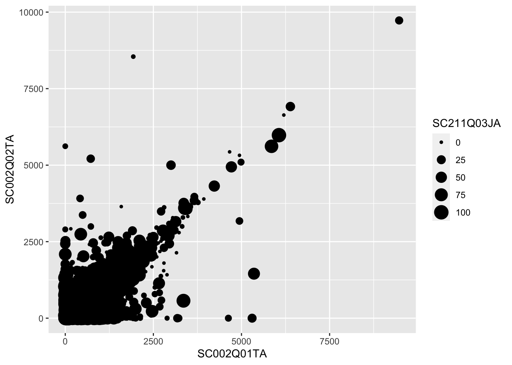
However, there is an error if we put size outside the aes(), and set it a value from the dataset, it can’t find value:
ggplot(data=PISA_2022_school) +
geom_point(aes(x = SC002Q01TA,
y = SC002Q02TA),
size=SC211Q03JA) # this is now outside the aesError in eval(expr, envir, enclos): object 'SC211Q03JA' not foundbut if we set the size explicitly to 3, outside the aes(), then all points will be that size
12.1.1 Questions
- Spot the three errors in this graph code
- Using the
PISA_2022dataset, plot a graph for students fromNorwayto look at the relationship between Home Possessions (WLE)HOMEPOSand reading gradePV1READ. Colour each point with the genderST004D01Tof the student. Give the graph sensiblexandylabels by usingxlab("label")andylab("label")
- Using the
PISA_2022dataset for each countryCNT, create a graph to explore how themedianof the sense of school belongingBELONGrelates to themedianof the disciplinary climate in mathematicsDISCLIM, adjust the colour of each point to reflect themeanof students in each countryESCS.
HINT: You’ll need create a new data frame with summarised variables for median_belong, median_discipline and mean_wealth.
HINT: To make your colours stand out more, add + scale_color_gradientn(colours = rainbow(3)) to the end of your plot.
12.2 geom_bar
The geom_bar function is versatile, allowing the creation of bar, multiple bar, stacked bar charts and histograms. This first example shows how we can use bar charts to represent the number of cars in a household ST251Q01JA:
1plot_cars <- PISA_2022 %>% filter(!is.na(ST251Q01JA))
2ggplot(data = plot_cars,
3 aes(x=ST251Q01JA)) +
4 geom_bar()- 1
-
get the
PISA_2022dataset and remove all rows whereST251Q01JAisNA, storing this new dataset asplot_cars - 2
-
pass the
plot_carstoggplot, as the dataset we are going to plot - 3
-
specify the
xvalues to be the values stored inST251Q01JA, i.e. we will have a bar for each response given inST251Q01JA:None,One,Two,Three or more. - 4
-
geom_bartell ggplot to make bars, it uses theaesthetic from line 5, to plot thexaxis, note we haven’t given it ayvalue, this is auto-calculated from the number of students in eachxgroup.
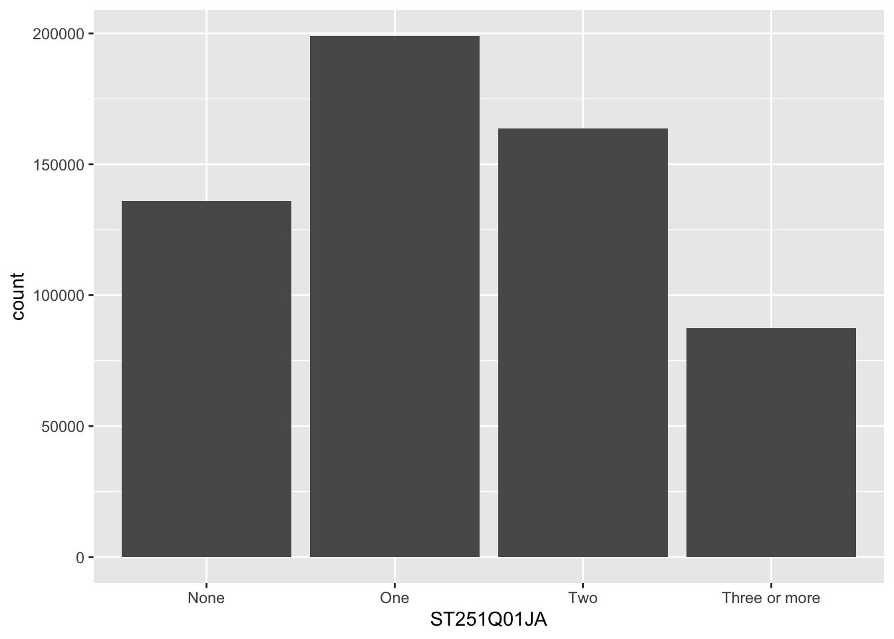
We can choose to let ggplot split the results into different groups for us by setting a fill option, in this case on the OECD status of the country, i.e. do students in OECD countries have more cars than those not in OECD countries, to do this, we add fill=OECD to the aes on line 2 below:
The bars are now coloured with a key, but, annoyingly, the bars are on top of each other which makes it hard to make direct comparisons. To compare different groups we need the bars to not be stacked, we want them next to each other, or in ggplot language, we want the bars to dodge each other, to do this we add the position=position_dodge() command to line 3 below:
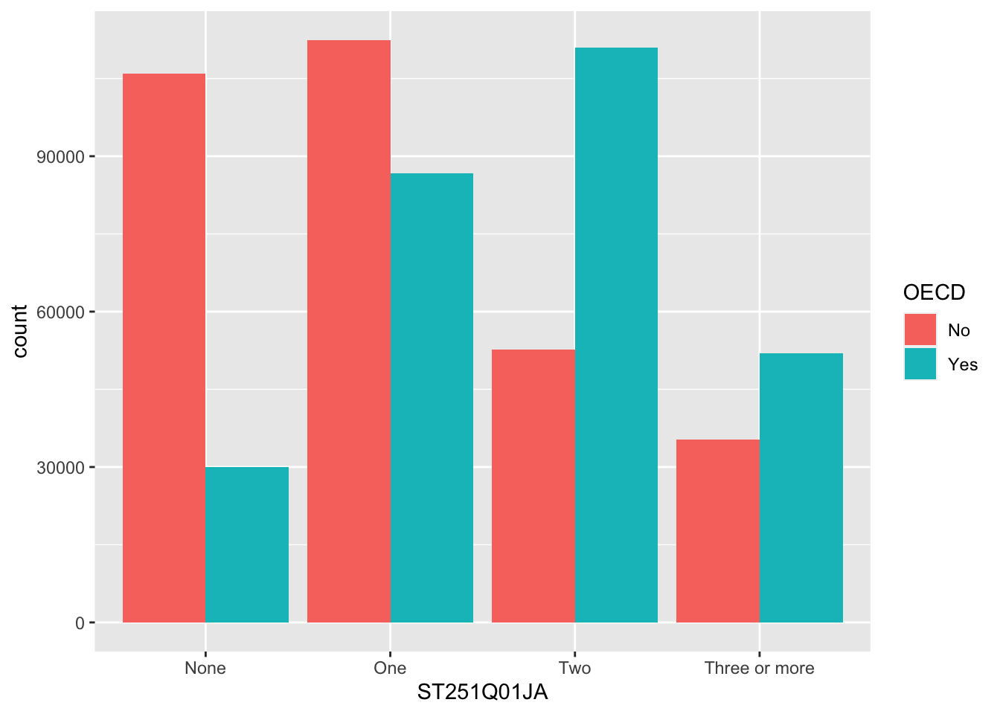
12.2.1 Raising the bars yourself
ggplot can do a lot of the hard work when putting together bar charts, e.g. counting the number of students in each group, but there might also be times when you want to use pipes to calculate summary values that you then want plot. That is, you want to specify the heights of the bars yourself. To do this we will specify the y axis in the aes and use stat="indentity" to tell ggplot that’s what we’re doing. Take the example where you want to find the overall percentage of students for a range of countries getting over 500 in PV1SCIE:
1plot_data <- PISA_2022 %>%
group_by(OECD, CNT) %>%
summarise(all_students = n(),
upper_sci_per = sum(PV1SCIE > 500) / n())
2ggplot(data=plot_data,
aes(x=CNT, y=upper_sci_per)) +
3 geom_bar(aes(fill=OECD),
4 position=position_dodge(),
5 stat="identity") +
6 theme(axis.text.x = element_text(angle = 90, vjust = 0.5, hjust=1))- 1
-
creates a dataframe
plot_datathat calculates the percentage of students in each countryCNT, that have a science gradePV1SCIEover500 - 2
-
as we are setting the heights of the bars ourselves, we need to give the ggplot
aescommand ayvalue, in this casey=upper_sci_per - 3
-
the
geom_baris given afillvalue ofOECD, this will allow us to see how countries in and out of the OECD compare - 4
-
we use
position=position_dodge()as we want the percentage grades of each country to be next to each other so we can look for differences in heights - 5
-
stat="identity"tellsgeom_barthat you have defined your own bar heights in theyattribute and not to count the number of rows. - 6
-
the
themecommand helps rotate the x-axis labels 90 degrees, so they don’t overlap.
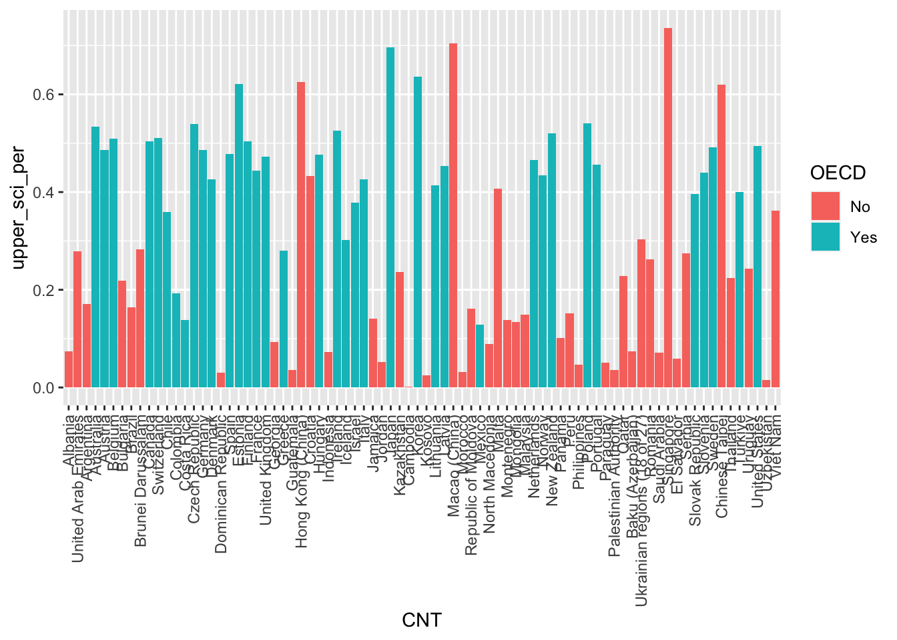
Alternatively, you can use the geom_col() function that can handle you setting the y values and not specifying stat="identity"
12.2.2 Questions
- Can you spot the 4 errors in this code.
- Create a bar chart showing the total number of students for each grouping of “How satisfied are you with each of the following: The way that you look”
WB155Q02HA. Adjust this graph to see if there is a difference for this among females and males:
- Plot bars for the number of Females and Males
ST004D01Twho answer each grouping for: “Confident can do in future: : Finding learning resources online on my own”ST355Q03JA. Make sure that the barsposition_dodge()each other so we can compare the heights.
- For France and the United Kingdom, plot the total number of students who gave each answer for
ST324Q11JA“Agree/disagree: School has been a waste of time.”. Filter out all theNAvalues first!is.na(...)
- Using the
PISA_2022_schooldataset (available here create a table that stores for each countryCNT
- the total number of full-time teacher,
SC018Q01TA01 - the total number of full-time teachers with a bachelors qualification
SC018Q08JA01 - the total number of full-time teachers with a master’s qualification
SC018Q01TA01 - the total number of full-time teachers with a doctoral qualification
SC018Q10JA01
Add an additional column working out the % of teachers with master’s in each country, call this per_MA
Using this dataframe plot a bar graph for each country of the per_MA, use the number of schools as a fill:
- [Extension] Explore other patterns in the school and student Pisa datasets.
12.3 geom_text
Our bar charts look great, but finding the actual value of each bar can be a little clumsy if we have to get a ruler out and read off the y-axis. Better would be for us to have numbers listed at the top of each bar by adding a geom_text element:
plot_cars <- PISA_2022 %>% filter(!is.na(ST251Q01JA))
ggplot(data = plot_cars,
aes(x=ST251Q01JA, fill=OECD)) +
geom_bar(position=position_dodge()) +
1 geom_text(stat='count',
2 aes(label=after_stat(count)),
3 position = position_dodge(width=0.9),
4 vjust=-0.5)- 1
-
line 6 starts the
geom_textcommand, telling the geom to use thecountstatistic from ggplot, this means it will be able to fetch the number of rows in each grouping. - 2
-
as we want the label to change for each bar element, we put
label=after_stat(count)insideaes. Thexlocation of the labels is inherited from line 4 and theylocation will be calculated from the height of each bar - 3
-
we want the labels to align to the bars, so we tell the
geom_textto alsoposition_dodge, passing awidth=0.9to the dodge function, so the labels line up above the columns, - 4
-
finally, on line 9, we vertically adjust the labels
vjust, so they sit on top of the columns.
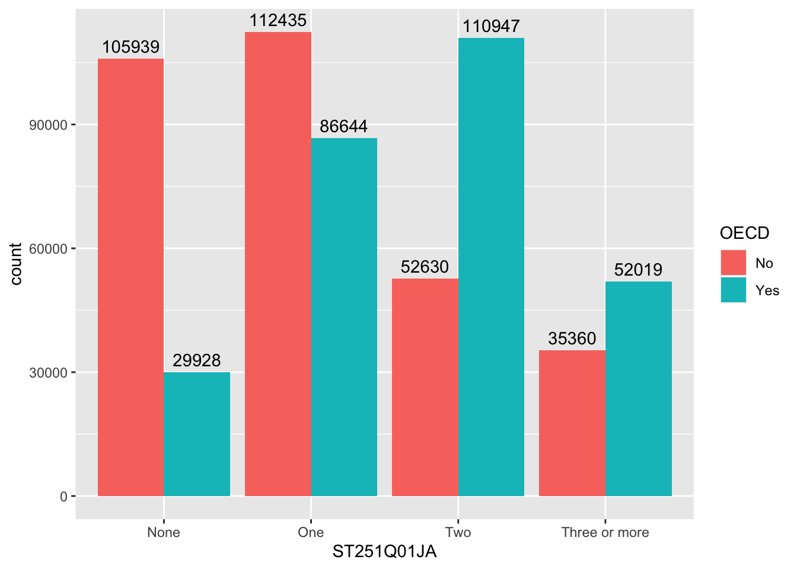
Rather than adding the count, you might want to add the percentage that each bar represents, we can do this by changing the value given to label on line 5, below:
ggplot(data = plot_cars,
aes(x=ST251Q01JA, fill=OECD)) +
geom_bar(position=position_dodge()) +
geom_text(stat='count',
aes(label=100*(after_stat(count)/sum(after_stat(count))) %>% round(3),
group = OECD),
position = position_dodge(width=0.9),
vjust=-0.5)Additionally, when we make graphs we often want to label the dataset, for example if we were to plot all the countries and their PV1MATH and PV1READ scores, we would get:
plot_data <- PISA_2022 %>%
group_by(OECD, CNT) %>%
summarise(m_read = mean(PV1READ, na.rm="TRUE"),
m_maths = mean(PV1MATH, na.rm="TRUE"))
ggplot(data=plot_data,
aes(x=m_read, y=m_maths, colour=OECD)) +
geom_point() 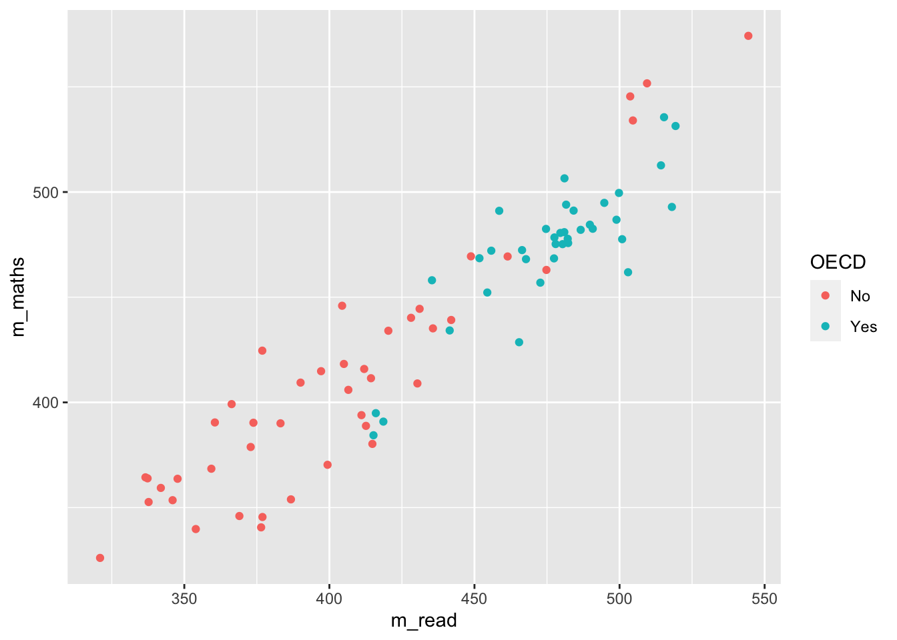
This looks great, but we don’t actually know which countries are which. To get this data we need to add text to the graph, using geom_text.
ggplot(data=plot_data,
aes(x=m_read, y=m_maths, colour=OECD)) +
geom_point() +
geom_text(aes(label=CNT),
colour="black",
check_overlap = TRUE)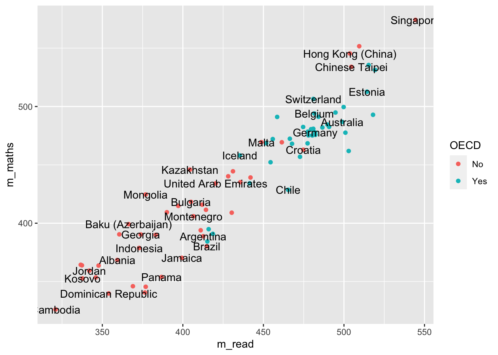
Here we have used colour="black" outside the aes to define the colour for all the labels, and check_overlap = TRUE which removes any labels that are on top of each other. It’s still a little bit hard to understand, and maybe we want to focus on just a few of the labels for countries we are interested in. For example
# make a vector of countries you want to have labels for
focus_cnt <- c("United Kingdom", "France", "Argentina")
# add a new column to the plot_data where these countries are
plot_data <- plot_data %>% mutate(focus = CNT %in% focus_cnt)
plot_data# A tibble: 80 × 5
# Groups: OECD [2]
OECD CNT m_read m_maths focus
<fct> <fct> <dbl> <dbl> <lgl>
1 No Albania 359. 368. FALSE
2 No United Arab Emirates 420. 434. FALSE
3 No Argentina 413. 389. TRUE
4 No Bulgaria 405. 418. FALSE
5 No Brazil 415. 380. FALSE
6 No Brunei Darussalam 428. 440. FALSE
7 No Dominican Republic 354. 340. FALSE
8 No Georgia 374. 390. FALSE
9 No Guatemala 377. 346. FALSE
10 No Hong Kong (China) 504. 545. FALSE
# ℹ 70 more rowsNow we can adjust out geom_text to only show those countries that we want to focus on:
ggplot(data=plot_data,
aes(x=m_read, y=m_maths, colour=OECD)) +
geom_point() +
1 geom_text(data=plot_data %>% filter(focus == TRUE),
2 aes(label=CNT),
colour="black",
check_overlap = TRUE)- 1
-
changes the data that is being passed to the
geom_text, it no longer uses the data defined in theggplotcommand, but has a new dataset, that is filtered onfocus == TRUE, i.e. only containing the countries that we want. - 2
-
Note that the
xandymappings from line 2 are inherited by line 6, it’s only the data that we have redefined
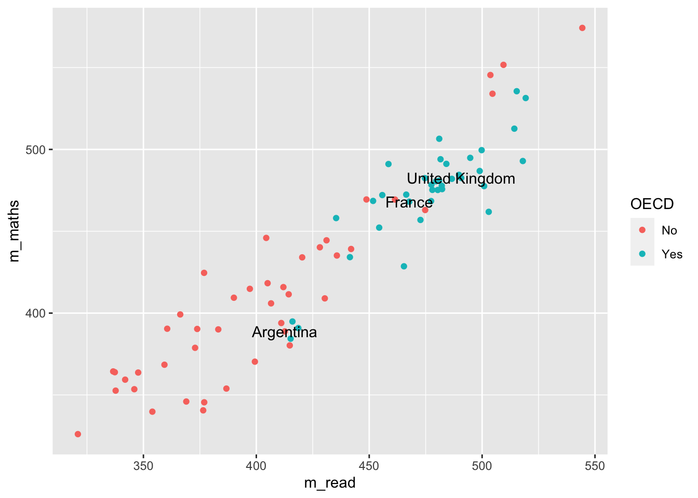
Tip
geom_text is great, but you might find that ggrepel package useful as it’ll add lines connecting the text the data points. Using the plot_data from above:
13 faceting
Faceting allows you to easily create multiple graphs from one dataset and one ggplot definition by splitting the data on different factors, by defining:
facet_grid(<column_to_split> ~ .)
or
facet_grid(. ~ <column_to_split>)
Looking at the PISA_2022 dataset, we can plot the HOMEPOS and reading test outcome PV1READ variables against each other:
# create a subset of the data for plotting
plot_data <- PISA_2022 %>%
select(OECD, CNT, HOMEPOS, PV1READ) %>%
filter(CNT %in% c("Germany",
"United Kingdom"))
ggplot(data=plot_data, aes(x=HOMEPOS, y=PV1READ)) +
geom_point() +
geom_smooth() +
theme(legend.position = "bottom")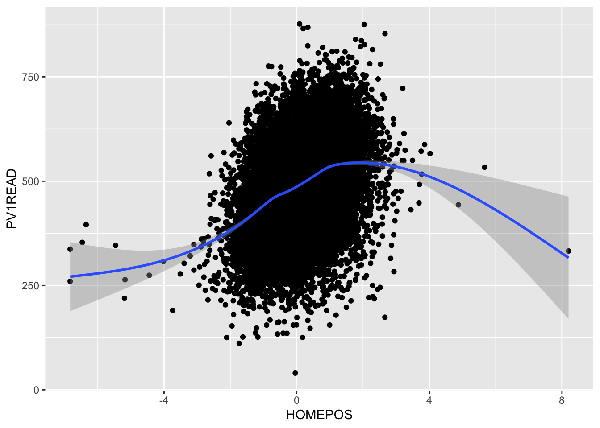
But it isn’t clear how this graph varies between countries. We could try plotting separate graphs for each country, but there is a faster way, using:
+ facet_grid(CNT ~ .)
ggplot will automatically create graphs for subsets of plot_data, split on each different country in CNT
ggplot(data=plot_data, aes(x=HOMEPOS, y=PV1READ)) +
geom_point() +
geom_smooth() +
theme(legend.position = "bottom") +
facet_grid(CNT ~ .)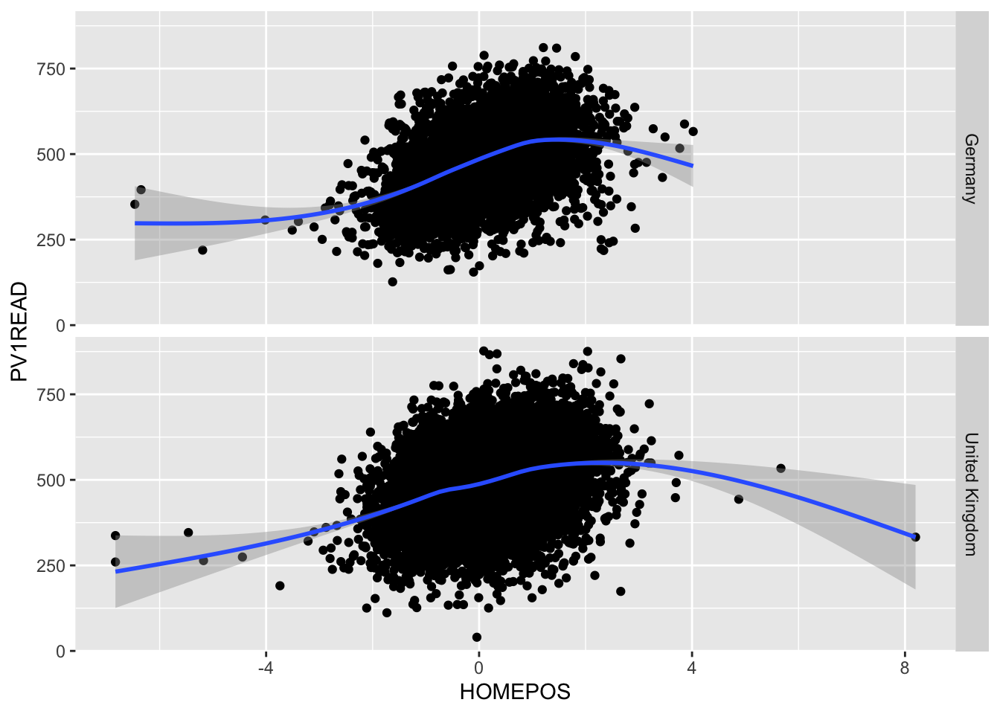
If the column you want to split on it on the left hand side of facet_grid(CNT ~ .), then the graphs will be piled on top of each other, if it’s on the right hand side facet_grid(. ~ CNT), then they’ll be side by side.
Take a subset of the overall dataset, by filtering on a few countries, take another one of your plots and use facet_grid(CNT ~ .) to explore the graphs for different countries.
13.1 Exporting plots
ggplot can export data in a variety of formats suitable for printing, publication and the web. Once you have created a graph and stored it in an object my_graph <- ggplot(..., the command to save the graph to your hard drive is:
ggsave(<file_location_name_and_extension>, <object_name>, width = 5, height = 4, device=<file_ext>)
If you want to change the output format, just change the extension of the file you are saving:
- “poverty_size.pdf” perfect for publication and printing, potentially large file size
- “poverty_size.svg” the same as pdf, also suitable for putting on webpages
- “poverty_size.png” smaller file size, suitable for websites and presentations
- “poverty_size.jpg” similar output to png
14 Additional support on graphing
14.1 Using R to do descriptive statistics and plot graphs
You can find the code used in the video below:
Show the code
# Introduction to plotting graphs
#
# Download data from /Users/k1765032/Library/CloudStorage/GoogleDrive-richardandrewbrock@gmail.com/.shortcut-targets-by-id/1c3CkaEBOICzepArDfjQUP34W2BYhFjM4/PISR/Data/PISA/subset/Students_2022_RBDP_none_levels.rds
# You want the file: Students_2022_RBDP_none_levels.rds
# and place in your own file system
# change loc to load the data directly. Loading into R might take a few minutes
library(tidyverse)
loc <- "/Users/k1765032/Library/CloudStorage/GoogleDrive-richardandrewbrock@gmail.com/.shortcut-targets-by-id/1c3CkaEBOICzepArDfjQUP34W2BYhFjM4/PISR/Data/PISA/subset/Students_2022_RBDP_none_levels.rds"
PISA_2022 <- read_rds(loc)
# Calculating means of groups
# The PISA_2022 dataframe is piped to a new dataframe MeanPISA
# The data are grouped by the country variable (CNT)
# The countries of interest are chosen (UK, France, Germany and the US)
# The summarise function is used to output the mean and standard deviation score for each country
# on the Science Plausible Value (PV1SCIE) and NAs are ignored na.rm=TRUE
MeanPISA <- PISA_2022 %>%
group_by(CNT) %>%
filter(CNT=="United Kingdom" | CNT== "France" | CNT== "Germany" | CNT=="United States") %>%
summarise(mean_sci = mean(PV1SCIE, na.rm=TRUE), sd_sci= sd(PV1SCIE, na.rm=TRUE))
print(MeanPISA)
# To plot data we can use the ggplot function.
# We will start by plotting a column graph use geom_col
# We specify the data set for ggplot to use (MeanPisa) and then
# define the x and y variables:
# ggplot(MeanPISA,
# aes(x=CNT, y=mean_sci))
# geom_col() (Note the plus is on the line before) plots the graph and the fill colour is set to red
# The next three lines set the formatting of the axis text and add x and y axis labels
ggplot(MeanPISA,
aes(x=CNT, y=mean_sci))+
geom_col(fill="red") +
theme(axis.text.x = element_text(angle = 90, hjust=0.95, vjust=0.2, size=10)) +
xlab("Country") +
ylab("Science Score")
# For plotting a scatter plot or PISA reading scores against science scores
#, first we make a managable data set
# I will filter the data set to include only the UK data
# and remove any NAs
UKData <- PISA_2022 %>%
filter(CNT=="United Kingdom") %>%
drop_na(PV1SCIE)
# This time I will use ggplot to plot a scatter graph
# I feed UKDATA to ggplot, specify the x (PISA Reading score)
# And y (PISA science score). This time, I have linked the colour
# to a variable (ST004D01T) which is the gender value, giving
# plot points of different colours for boys and girls
# To produce a scatter plot, I use geom_point to plot points,
# Giving the size of point and the transparency (alpha=0.5) -
# some transparency of points is helpful when plots become dense
# The x and y lables are added
# Finally, a line is plotted - geom_smooth(method='lm')
# sets the line to a linear ('lm') line
ggplot(UKData,
aes(x=PV1READ, y=PV1SCIE, colour=ST004D01T)) +
geom_point(size=0.1, alpha=0.5) +
ylab("Science Score") +
xlab("Reading Score") +
geom_smooth(method='lm')
# Where R becomes very powerful is being able to produce multiple charts rapidly
# In the code below, I plot reading against science scores as above, but this time
# Use the entire data set - for the whole world!
# All the steps are the same, except, I use the facet_wrap, a way to create multiple
# graph panels - the instruction creates a set of graphs for each country
WorldData <- PISA_2022 %>%
drop_na(PV1SCIE)
ggplot(WorldData,
aes(x=PV1READ, y=PV1SCIE, colour=ST004D01T)) +
geom_point(size=0.1, alpha=0.5) +
ylab("Science Score") +
xlab("Reading Score") +
geom_smooth(method='lm') +
facet_wrap(CNT~.)Footnotes
Even in this cut down format the PISA data might take a few minutes to load. You can find the full dataset here, but be warned, it might crash you machine when trying to load it! Plug your laptop into a power supply, and having 16GB of RAM is highly recommended! You might also need to wrangle some of the fields to make them work for your purposes, you might enjoy the challenge!↩︎